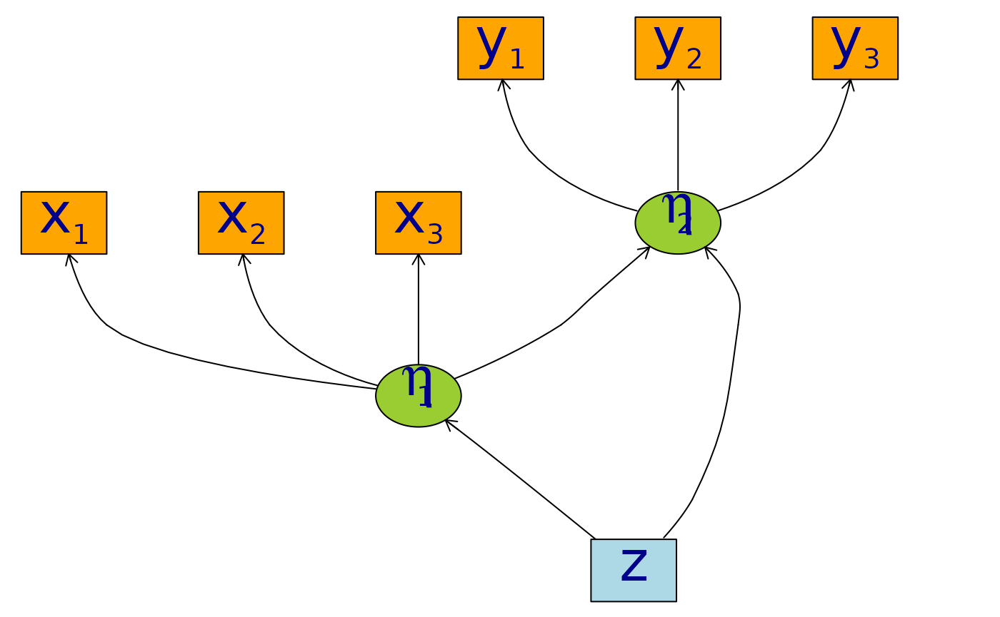

Non-linear latent variable models and error-in-variable models
Klaus Kähler Holst
2025-10-29
Source:vignettes/nonlinear.Rmd
nonlinear.RmdWe consider the measurement models given by
and with a structural model given by with iid measurement errors and standard normal distributed covariate . To simulate from this model we use the following syntax:
f <- function(x) cos(1.25*x) + x - 0.25*x^2
m <- lvm(x1+x2+x3 ~ eta1, y1+y2+y3 ~ eta2, latent=~eta1+eta2)
regression(m) <- eta1+eta2 ~ z
functional(m, eta2~eta1) <- f
d <- sim(m, n=200, seed=42) # Default is all parameters are 1
## plot(m, plot.engine="visNetwork")
plot(m)
We refer to (K. K. Holst and Budtz-Jørgensen 2013) for details on the syntax for model specification.
Estimation
To estimate the parameters using the two-stage estimator described in (Klaus Kähler Holst and Budtz-Jørgensen 2020), the first step is now to specify the measurement models
m1 <- lvm(x1+x2+x3 ~ eta1, eta1 ~ z, latent=~eta1)
m2 <- lvm(y1+y2+y3 ~ eta2, eta2 ~ z, latent=~eta2)Next, we specify a quadratic relationship between the two latent variables
nonlinear(m2, type="quadratic") <- eta2 ~ eta1and the model can then be estimated using the two-stage estimator
e1 <- twostage(m1, m2, data=d)
e1
#> Estimate Std. Error Z-value P-value
#> Measurements:
#> y2~eta2 0.97686 0.03451 28.30873 <1e-12
#> y3~eta2 1.04485 0.03485 29.98162 <1e-12
#> Regressions:
#> eta2~z 0.88513 0.20778 4.25996 2.045e-05
#> eta2~eta1_1 1.14072 0.17410 6.55194 5.679e-11
#> eta2~eta1_2 -0.45055 0.07161 -6.29195 3.135e-10
#> Intercepts:
#> y2 -0.12198 0.10915 -1.11749 0.2638
#> y3 -0.09879 0.10545 -0.93680 0.3489
#> eta2 0.67814 0.17363 3.90567 9.396e-05
#> Residual Variances:
#> y1 1.30730 0.17743 7.36790
#> y2 1.11056 0.14478 7.67064
#> y3 0.80961 0.13203 6.13219
#> eta2 2.08483 0.28986 7.19258We see a clear statistically significant effect of the second order
term (eta2~eta1_2). For comparison we can also estimate the
full MLE of the linear model:
e0 <- estimate(regression(m1%++%m2, eta2~eta1), d)
estimate(e0,keep="^eta2~[a-z]",regex=TRUE) ## Extract coef. matching reg.ex.
#> Estimate Std.Err 2.5% 97.5% P-value
#> eta2~eta1 1.4140 0.2261 0.97083 1.857 4.014e-10
#> eta2~z 0.6374 0.2778 0.09291 1.182 2.177e-02Next, we calculate predictions from the quadratic model using the estimated parameter coefficients
newd <- expand.grid(eta1=seq(-4, 4, by=0.1), z=0)
pred1 <- predict(e1, newdata=newd, x=TRUE)
head(pred1)
#> y1 y2 y3 eta2
#> [1,] -11.093569 -10.958869 -11.689950 -11.093569
#> [2,] -10.623561 -10.499736 -11.198861 -10.623561
#> [3,] -10.162565 -10.049406 -10.717187 -10.162565
#> [4,] -9.710579 -9.607878 -10.244928 -9.710579
#> [5,] -9.267605 -9.175153 -9.782084 -9.267605
#> [6,] -8.833641 -8.751230 -9.328656 -8.833641To obtain a potential better fit we next proceed with a natural cubic spline
kn <- seq(-3,3,length.out=5)
nonlinear(m2, type="spline", knots=kn) <- eta2 ~ eta1
e2 <- twostage(m1, m2, data=d)
e2
#> Estimate Std. Error Z-value P-value
#> Measurements:
#> y2~eta2 0.97752 0.03453 28.31279 <1e-12
#> y3~eta2 1.04508 0.03487 29.97132 <1e-12
#> Regressions:
#> eta2~z 0.86729 0.20272 4.27816 1.884e-05
#> eta2~eta1_1 2.86231 0.67275 4.25464 2.094e-05
#> eta2~eta1_2 0.00344 0.10097 0.03409 0.9728
#> eta2~eta1_3 -0.26270 0.29398 -0.89362 0.3715
#> eta2~eta1_4 0.50778 0.35189 1.44301 0.149
#> Intercepts:
#> y2 -0.12185 0.10922 -1.11563 0.2646
#> y3 -0.09874 0.10545 -0.93638 0.3491
#> eta2 1.83814 1.66430 1.10445 0.2694
#> Residual Variances:
#> y1 1.31286 0.17750 7.39636
#> y2 1.10412 0.14455 7.63858
#> y3 0.81124 0.13184 6.15312
#> eta2 1.99404 0.26939 7.40217Confidence limits can be obtained via the Delta method using the
estimate method:
p <- cbind(eta1=newd$eta1,
estimate(e2,f=function(p) predict(e2,p=p,newdata=newd))$coefmat)
head(p)
#> eta1 Estimate Std.Err 2.5% 97.5% P-value
#> p1 -4.0 -9.611119 1.2647437 -12.08997 -7.132266 2.978251e-14
#> p2 -3.9 -9.324887 1.2051236 -11.68689 -6.962889 1.012296e-14
#> p3 -3.8 -9.038656 1.1463510 -11.28546 -6.791849 3.152439e-15
#> p4 -3.7 -8.752425 1.0885635 -10.88597 -6.618879 8.958702e-16
#> p5 -3.6 -8.466193 1.0319265 -10.48873 -6.443654 2.320153e-16
#> p6 -3.5 -8.179962 0.9766401 -10.09414 -6.265782 5.493600e-17The fitted function can be obtained with the following code:
plot(I(eta2-z) ~ eta1, data=d, col=Col("black",0.5), pch=16,
xlab=expression(eta[1]), ylab=expression(eta[2]), xlim=c(-4,4))
lines(Estimate ~ eta1, data=as.data.frame(p), col="darkblue", lwd=5)
confband(p[,1], lower=p[,4], upper=p[,5], polygon=TRUE,
border=NA, col=Col("darkblue",0.2))Cross-validation
A more formal comparison of the different models can be obtained by cross-validation. Here we specify linear, quadratic and cubic spline models with 4 and 9 degrees of freedom.
m2a <- nonlinear(m2, type="linear", eta2~eta1)
m2b <- nonlinear(m2, type="quadratic", eta2~eta1)
kn1 <- seq(-3,3,length.out=5)
kn2 <- seq(-3,3,length.out=8)
m2c <- nonlinear(m2, type="spline", knots=kn1, eta2~eta1)
m2d <- nonlinear(m2, type="spline", knots=kn2, eta2~eta1)To assess the model fit average RMSE is estimated with 5-fold cross-validation repeated two times
## Scale models in stage 2 to allow for a fair RMSE comparison
d0 <- d
for (i in endogenous(m2))
d0[,i] <- scale(d0[,i],center=TRUE,scale=TRUE)
## Repeated 5-fold cross-validation:
ff <- lapply(list(linear=m2a,quadratic=m2b,spline4=m2c,spline6=m2d),
function(m) function(data,...) twostage(m1,m,data=data,stderr=FALSE,control=list(start=coef(e0),contrain=TRUE)))
fit.cv <- lava:::cv(ff,data=d,K=5,rep=2,mc.cores=parallel::detectCores(),seed=1)
summary(fit.cv)
#> Length Class Mode
#> cv 40 -none- numeric
#> call 7 -none- call
#> names 4 -none- character
#> rep 1 -none- numeric
#> folds 1 -none- numericHere the RMSE is in favour of the splines model with 4 degrees of freedom:
fit <- lapply(list(m2a,m2b,m2c,m2d),
function(x) {
e <- twostage(m1,x,data=d)
pr <- cbind(eta1=newd$eta1,predict(e,newdata=newd$eta1,x=TRUE))
return(list(estimate=e,predict=as.data.frame(pr)))
})
plot(I(eta2-z) ~ eta1, data=d, col=Col("black",0.5), pch=16,
xlab=expression(eta[1]), ylab=expression(eta[2]), xlim=c(-4,4))
col <- c("orange","darkred","darkgreen","darkblue")
lty <- c(3,4,1,5)
for (i in seq_along(fit)) {
with(fit[[i]]$pr, lines(eta2 ~ eta1, col=col[i], lwd=4, lty=lty[i]))
}
legend("bottomright",
c("linear","quadratic","spline(df=4)","spline(df=6)"),
col=col, lty=lty, lwd=3)
For convenience, the function twostageCV can be used to
do the cross-validation (also for choosing the mixture distribution via
the ``nmix`` argument, see the section below). For example,
selmod <- twostageCV(m1, m2, data=d, df=2:4, nmix=1:2,
nfolds=2, rep=1, mc.cores=parallel::detectCores())applies cross-validation (here just 2 folds for simplicity) to select the best splines with degrees of freedom varying from from 1-3 (the linear model is automatically included)
selmod
#> Length Class Mode
#> model1 11 summary.lvm.mixture list
#> AIC1 2 -none- numeric
#> cv 4 -none- numeric
#> knots 4 -none- list
#> model2 11 summary.lvmfit listSpecification of general functional forms
Next, we show how to specify a general functional relation of
multiple different latent or exogenous variables. This is achieved via
the predict.fun argument. To illustrate this we include
interactions between the latent variable
and a dichotomized version of the covariate
d$g <- (d$z<0)*1 ## Group variable
mm1 <- regression(m1, ~g) # Add grouping variable as exogenous variable (effect specified via 'predict.fun')
mm2 <- regression(m2, eta2~ u1+u2+u1:g+u2:g+z)
pred <- function(mu,var,data,...) {
cbind("u1"=mu[,1],"u2"=mu[,1]^2+var[1],
"u1:g"=mu[,1]*data[,"g"],"u2:g"=(mu[,1]^2+var[1])*data[,"g"])
}
ee1 <- twostage(mm1, model2=mm2, data=d, predict.fun=pred)
estimate(ee1,keep="eta2~u",regex=TRUE)
#> Estimate Std.Err 2.5% 97.5% P-value
#> eta2~u1 0.9891 0.3020 0.3971 1.5810 0.001057
#> eta2~u2 -0.3962 0.1443 -0.6791 -0.1133 0.006047
#> eta2~u1:g 0.4487 0.4620 -0.4568 1.3543 0.331409
#> eta2~u2:g 0.0441 0.2166 -0.3804 0.4686 0.838667A formal test show no statistically significant effect of this interaction
summary(estimate(ee1,keep="(:g)", regex=TRUE))
#> Call: estimate.default(x = ee1, keep = "(:g)", regex = TRUE)
#> ────────────────────────────────────────────────────────────────────────────────
#> Estimate Std.Err 2.5% 97.5% P-value
#> eta2~u1:g 0.4487 0.4620 -0.4568 1.3543 0.3314
#> eta2~u2:g 0.0441 0.2166 -0.3804 0.4686 0.8387
#>
#> Null Hypothesis:
#> [eta2~u1:g] = 0
#> [eta2~u2:g] = 0
#>
#> chisq = 0.9441, df = 2, p-value = 0.6237Mixture models
Lastly, we demonstrate how the distributional assumptions of stage 1 model can be relaxed by letting the conditional distribution of the latent variable given covariates follow a Gaussian mixture distribution. The following code explictly defines the parameter constraints of the model by setting the intercept of the first indicator variable, , to zero and the factor loading parameter of the same variable to one.
m1 <- baptize(m1) ## Label all parameters
intercept(m1, ~x1+eta1) <- list(0,NA) ## Set intercept of x1 to zero. Remove the label of eta1
regression(m1,x1~eta1) <- 1 ## Factor loading fixed to 1The mixture model may then be estimated using the
mixture method (note, this requires the mets
package to be installed), where the Parameter names shared across the
different mixture components given in the list will be
constrained to be identical in the mixture model. Thus, only the
intercept of
is allowed to vary between the mixtures.
To decrease the risk of using a local maximizer of the likelihood we can rerun the estimation with different random starting values
em0 <- NULL
ll <- c()
for (i in 1:5) {
set.seed(i)
em <- mixture(m1, k=2, data=d, control=list(trace=0))
ll <- c(ll,logLik(em))
if (is.null(em0) || logLik(em0)<tail(ll,1))
em0 <- em
}
summary(em0)
#> Cluster 1 (n=162, Prior=0.776):
#> --------------------------------------------------
#> Estimate Std. Error Z value Pr(>|z|)
#> Measurements:
#> x1~eta1 1.00000
#> x2~eta1 0.99581 0.07940 12.54099 <1e-12
#> x3~eta1 1.06345 0.08436 12.60541 <1e-12
#> Regressions:
#> eta1~z 1.06675 0.08527 12.50989 <1e-12
#> Intercepts:
#> x1 0.00000
#> x2 0.03845 0.09890 0.38883 0.6974
#> x3 -0.02549 0.10333 -0.24667 0.8052
#> eta1 0.20925 0.13162 1.58984 0.1119
#> Residual Variances:
#> x1 0.98540 0.13316 7.40025
#> x2 0.97180 0.13156 7.38695
#> x3 1.01316 0.14294 7.08815
#> eta1 0.29046 0.11129 2.61004
#>
#> Cluster 2 (n=38, Prior=0.224):
#> --------------------------------------------------
#> Estimate Std. Error Z value Pr(>|z|)
#> Measurements:
#> x1~eta1 1.00000
#> x2~eta1 0.99581 0.07940 12.54099 <1e-12
#> x3~eta1 1.06345 0.08436 12.60541 <1e-12
#> Regressions:
#> eta1~z 1.06675 0.08527 12.50989 <1e-12
#> Intercepts:
#> x1 0.00000
#> x2 0.03845 0.09890 0.38883 0.6974
#> x3 -0.02549 0.10333 -0.24667 0.8052
#> eta1 -1.44290 0.25867 -5.57812 2.431e-08
#> Residual Variances:
#> x1 0.98540 0.13316 7.40025
#> x2 0.97180 0.13156 7.38695
#> x3 1.01316 0.14294 7.08815
#> eta1 0.29046 0.11129 2.61004
#> --------------------------------------------------
#> AIC= 1958.803
#> ||score||^2= 8.81839e-06Measured by AIC there is a slight improvement in the model fit using the mixture model
The spline model may then be estimated as before with the
two-stage method
em2 <- twostage(em0,m2,data=d)
em2
#> Estimate Std. Error Z-value P-value
#> Measurements:
#> y2~eta2 0.97823 0.03464 28.23707 <1e-12
#> y3~eta2 1.04530 0.03480 30.04033 <1e-12
#> Regressions:
#> eta2~z 1.02884 0.22333 4.60676 4.09e-06
#> eta2~eta1_1 2.80413 0.65543 4.27831 1.883e-05
#> eta2~eta1_2 -0.02249 0.09997 -0.22496 0.822
#> eta2~eta1_3 -0.17333 0.28932 -0.59909 0.5491
#> eta2~eta1_4 0.38672 0.33978 1.13816 0.2551
#> Intercepts:
#> y2 -0.12171 0.10925 -1.11401 0.2653
#> y3 -0.09870 0.10546 -0.93588 0.3493
#> eta2 2.12372 1.66609 1.27467 0.2024
#> Residual Variances:
#> y1 1.31872 0.17654 7.46974
#> y2 1.09690 0.14502 7.56379
#> y3 0.81345 0.13259 6.13511
#> eta2 1.99590 0.28291 7.05501In this example the results are very similar to the Gaussian model:
plot(I(eta2-z) ~ eta1, data=d, col=Col("black",0.5), pch=16,
xlab=expression(eta[1]), ylab=expression(eta[2]))
lines(Estimate ~ eta1, data=as.data.frame(p), col="darkblue", lwd=5)
confband(p[,1], lower=p[,4], upper=p[,5], polygon=TRUE,
border=NA, col=Col("darkblue",0.2))
pm <- cbind(eta1=newd$eta1,
estimate(em2, f=function(p) predict(e2,p=p,newdata=newd))$coefmat)
lines(Estimate ~ eta1, data=as.data.frame(pm), col="darkred", lwd=5)
confband(pm[,1], lower=pm[,4], upper=pm[,5], polygon=TRUE,
border=NA, col=Col("darkred",0.2))
legend("bottomright", c("Gaussian","Mixture"),
col=c("darkblue","darkred"), lwd=2, bty="n")SessionInfo
sessionInfo()
#> R version 4.5.1 (2025-06-13)
#> Platform: x86_64-pc-linux-gnu
#> Running under: Ubuntu 24.04.3 LTS
#>
#> Matrix products: default
#> BLAS: /usr/lib/x86_64-linux-gnu/openblas-pthread/libblas.so.3
#> LAPACK: /usr/lib/x86_64-linux-gnu/openblas-pthread/libopenblasp-r0.3.26.so; LAPACK version 3.12.0
#>
#> locale:
#> [1] LC_CTYPE=C.UTF-8 LC_NUMERIC=C LC_TIME=C.UTF-8
#> [4] LC_COLLATE=C.UTF-8 LC_MONETARY=C.UTF-8 LC_MESSAGES=C.UTF-8
#> [7] LC_PAPER=C.UTF-8 LC_NAME=C LC_ADDRESS=C
#> [10] LC_TELEPHONE=C LC_MEASUREMENT=C.UTF-8 LC_IDENTIFICATION=C
#>
#> time zone: UTC
#> tzcode source: system (glibc)
#>
#> attached base packages:
#> [1] stats graphics grDevices utils datasets methods base
#>
#> other attached packages:
#> [1] lava_1.8.2
#>
#> loaded via a namespace (and not attached):
#> [1] Matrix_1.7-3 future.apply_1.20.0 jsonlite_2.0.0
#> [4] compiler_4.5.1 Rcpp_1.1.0 parallel_4.5.1
#> [7] Rgraphviz_2.52.0 jquerylib_0.1.4 globals_0.18.0
#> [10] splines_4.5.1 systemfonts_1.3.1 textshaping_1.0.4
#> [13] yaml_2.3.10 fastmap_1.2.0 lattice_0.22-7
#> [16] R6_2.6.1 generics_0.1.4 knitr_1.50
#> [19] BiocGenerics_0.54.1 htmlwidgets_1.6.4 graph_1.86.0
#> [22] future_1.67.0 desc_1.4.3 bslib_0.9.0
#> [25] rlang_1.1.6 cachem_1.1.0 xfun_0.53
#> [28] fs_1.6.6 sass_0.4.10 cli_3.6.5
#> [31] pkgdown_2.1.3 digest_0.6.37 grid_4.5.1
#> [34] mvtnorm_1.3-3 lifecycle_1.0.4 timereg_2.0.7
#> [37] evaluate_1.0.5 numDeriv_2016.8-1.1 listenv_0.9.1
#> [40] codetools_0.2-20 ragg_1.5.0 survival_3.8-3
#> [43] stats4_4.5.1 parallelly_1.45.1 rmarkdown_2.30
#> [46] mets_1.3.8 tools_4.5.1 htmltools_0.5.8.1